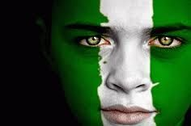
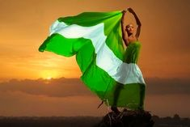

About My Country
Nigeria, often referred to as the "Giant of Africa,"
is a diverse and vibrant country located in West Africa.
With a population exceeding 200 million people,
it is the most populous country on the African continent and seventh globally.
Nigeria boasts a rich cultural heritage, reflected in its diverse ethnic groups, languages, and traditions.
Its landscape varies from bustling urban centers like Lagos,
its largest city and commercial hub, to vast savannahs, lush rainforests,
and picturesque coastlines along the Gulf of Guinea.
Nigeria's economy is one of the largest in Africa,
driven by its abundant natural resources, particularly oil, agriculture, and a burgeoning technology sector.
Despite its economic potential, Nigeria faces challenges such as political instability, corruption, and socioeconomic disparities.
However, its resilient and enterprising people continue to strive for progress, making Nigeria a dynamic and significant player on the global stage.
Get To Kown More
follow the links below to know more about the "Giants Of Africa"